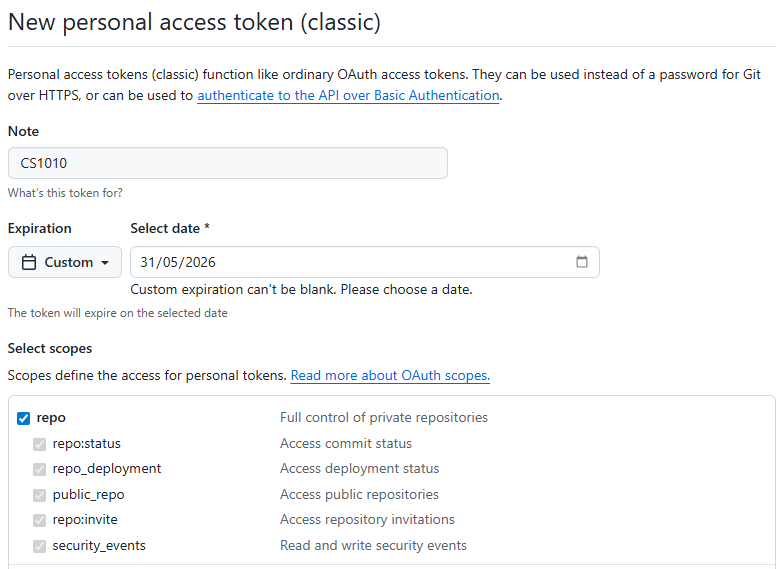
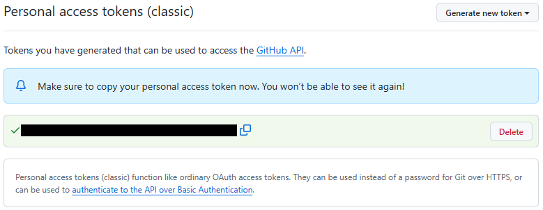
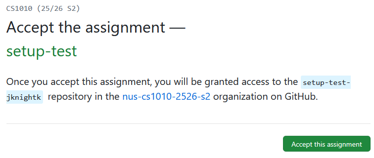

Linking Your PE Account to Your GitHub Account
Prerequisites
- You should already have your SoC Unix account, cluster access, and SoC VPN set up, and be able to
sshinto one of the CS1010 PE nodes. If you are not able to do this, please look at the guide on CS1010 programming environments - You should feel comfortable running basic Unix commands. If you have not gone through the Unix guide and got your hands dirty, please look at the guide and play with the various basic Unix commands.
- You should already have a GitHub account and can log into GitHub.com.
- You know how to create and edit a file in Vim.
- You have set up Vim.
Purpose
You will be using git (indirectly) for retrieving skeleton code and submitting completed assignments. We will set up your accounts on PE hosts below so that git will be associated with your GitHub account. This is a one-time setup. You don't have to do this for every assignment.
1. Setting up .gitconfig
Create and edit a file called .gitconfig in your home directory on the PE host, with the following content:
1 2 3 4 5 | |
Your email should be whatever you used to sign up on GitHub (which may not be your SoC or NUS email).
For example, a sample .gitconfig looks like this:
1 2 3 4 5 | |
After saving this file, run:
1 | |
It should return your GitHub username.
It should print your GitHub username as already set. If there is a typo, you need to edit .gitconfig again and reload it by repeating the command above.
2. Setting up Password-less Login for Github
Generating Personal Access Token
The steps are explained in detail on GitHub Docs. Here is a summary of the steps that you should follow for CS1010:
-
After logging into GitHub.com: click on your avatar in the top right corner, choose "Settings" from the menu, and choose "Developer settings" on the sidebar.
-
Then, click on "Personal access tokens" on the sidebar and choose "Tokens (classic)".
-
Next, click on "Generate new token" from the main panel and choose "Generate New Token (classic)". You will be asked to authenticate yourself.
After authentication, you will be redirected to the page for creating the token as shown below.

-
Enter a note (e.g., CS1010) so that you can remember what the token is for.
-
For expiration, set a custom date after the end of the semester (e.g., 31 May 2026) so that you do not need to recreate / extend the token.
-
For scopes, Select only "repo", which is sufficient for CS1010.
-
Click on generate token at the bottom of the page to create the token.
You will see the generated token on the screen as shown below:

(The generated token is the string covered by the black bar in the figure.)
Use the copy button on the right of the black bar to copy it to your clipboard.
You should save the copied token by pasting it somewhere private for your own keeping.
3. Saving your credentials through an empty lab assignment
We have created an empty lab assignment for you so that you can save your Github credentials on the PE node and test if you can correctly retrieve future lab files from GitHub. Complete the following steps:
- Click here https://classroom.github.com/a/VUiU0aBy.
(You will be required to login to Github if you have not done so. In addition, if you see a page asking you to select yourself from a list, simply click "Skip to the next step".)
You should see a page that looks like the following:

-
Click the accept button. Wait a bit and then refresh until you see a "You're ready to go" message.
-
Now, on the PE node, run the following command so that your username and personal access token will be saved upon your next Github login.
1 | |
- Next, run the following command so that the empty lab assignment will be set up and a Github login will be triggered.
1 | |
-
When prompted for a username, enter your GitHub username.
-
When prompted for a password, copy your personal token into the clipboard and go back to the terminal window.
-
Simply right click to paste the token into the window (the token won't be shown) and press Enter.
If everything works well, you should see:
1 2 3 4 5 6 | |
Change your working directory into setup-test-<username> and look at the directory content. It should contain a file README.md.
From this point onwards, you should be able to use git without having to enter your credentials.
If you see the message "Vim is not set up set up properly," please refer to the our Vim setup guide and set up Vim accordingly.
-
I skipped many cool details here. This topic is part of CS2105 and CS2107. Interested students can search for various articles and videos online about how public-key cryptography is used for authentication. ↩